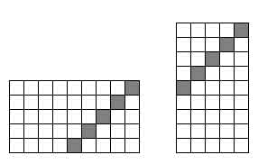

There is a 5x9 rectangle drawn on squared paper. In the lower left corner of the rectangle is a button. Kevin and Sophie take turns moving the button any number of squares either to the right or up. Kevin goes first. The winner is the one who places the button in upper right corner. Who would win, Kevin or Sophie, in a fair game?
In each of his turns, Kevin moves the button into one of the squares on the shaded diagonal on the diagram below. Sophie moves the button away from this diagonal during her turn. Since they can only move the button to the right or up the game will eventually end.

This problem can also be solved by starting from the end and working backwards using analysis of winning and losing positions.
Kevin wins.